Brand
- Karu is the Quechua word for far. Its mark is a khipu, the knotted cords the Inca used to keep records that runners carried across the Andes.

- Top cord
- The remote object, a file on disk, over HTTP or in a bucket.
- Hanging cords
- One byte-range read each.
- Knots
- The offset where each read lands.
- Motion
- One batched read. All four reads start together, the bytes flow down at their own pace, and the reads finish out of order, as Karu completes them.
The colours and the black outline come from Rumi, which stores its frames on top of Karu. The cords end square, and nothing in the mark has rounded corners.
The logo
The mark sits beside or above the wordmark, set in League Spartan SemiBold and drawn as outlines.
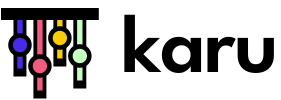


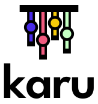


On dark backgrounds
On dark backgrounds the outline turns white and the colours stay.
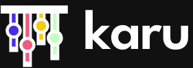


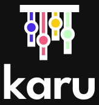




One colour
For print, stamps and places that take a single ink.


Colour
The four cords keep this order from left to right. The site accent is the violet of the Karu pages.
violet #492AE8
pink #F05B7F
yellow #F7CC09
mint #C4FFC2
ink #000000
night #111111
accent #4E04EB
Type
The wordmark is League Spartan SemiBold, always lowercase and always as outlines, so it never depends on an installed font. Page text uses Arial, as the rest of the Karu site does.
Small sizes
Below 64 pixels the knots blur, so favicons use three heavy cords without knots. Keep the full mark at 24 pixels or more, and leave a margin around it as wide as one knot.
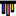
16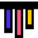
48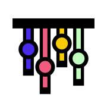
180mark at 24Do not
- Round the cord ends, the boxes around the mark or the icon corners.
- Stretch, rotate or tilt the mark.
- Change the colours or their order.
- Set the wordmark in another font or with capitals.
- Put the colour mark on a busy photo. Use the one-colour mark there.
Icons and avatars


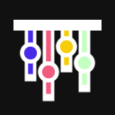

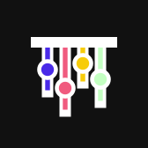


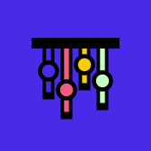


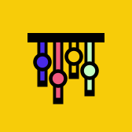


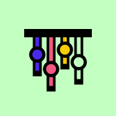


Everything in one download
Every svg and png on this page, with a short readme.
Download the Karu brand kit